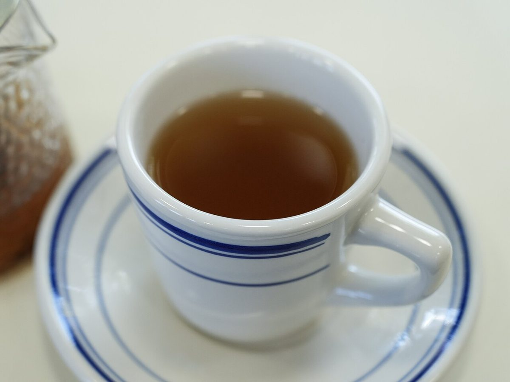
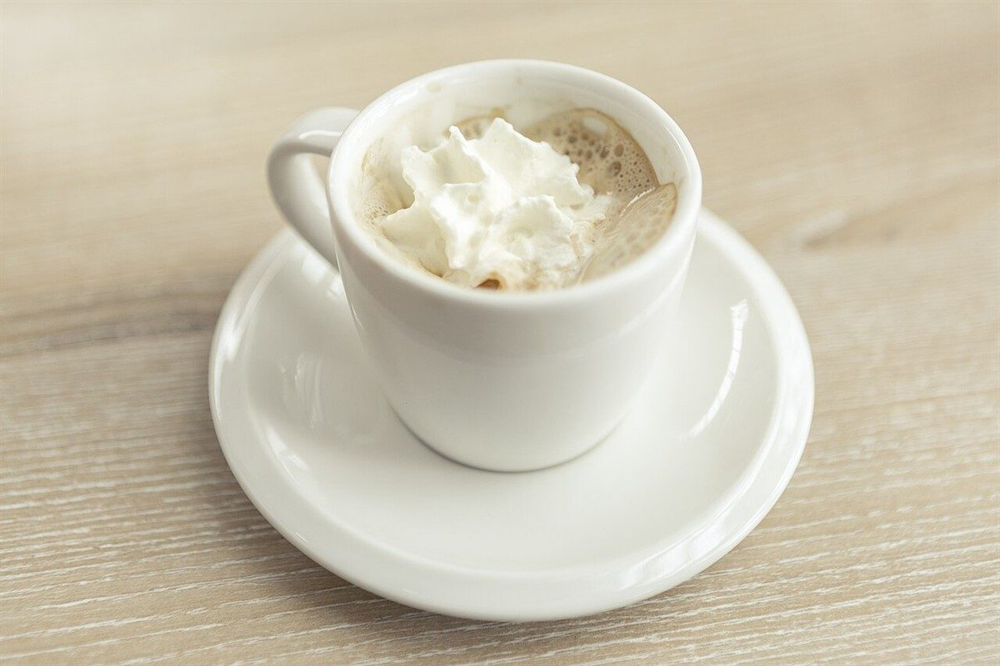

店のこと
店のこと
お店について確認できているのは、所在地とInstagramのアカウントだけです。
「想像してみる」部分は制作側が想像して書いたものです。お店の実際の様子・考え・メニューとは関係ありません。
確認できていること
- 店名は「Dolce」、業種はカフェ
- 所在地は福島県会津若松市西栄町6-14(〒965-0877)
- 電話番号はなし。連絡はInstagramから
- 営業時間・定休日・メニュー・価格・ご予約・駐車場は準備中

想像してみる
角砂糖ひとつぶんの、ひと休み
由来は分かりません。制作側は、コーヒーやお茶に角砂糖をひとつ落とすような、ちょっとした区切りの時間に寄り添う店かもしれない、と想像しました。実際のお店の姿ではありません。



町のこと
会津若松市について
会津若松市は福島県西部の会津地方にある市で、お城のある城下町として知られているとされます。ただし、お店がその歴史や名所と関係しているかどうかは分かりません。